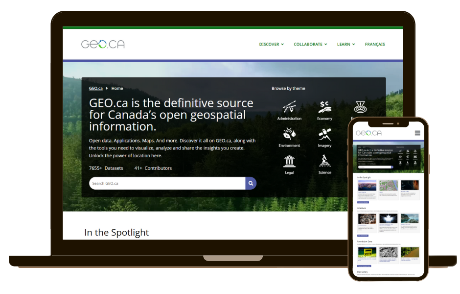

GEO.ca Website Redesign
Government of Canada - Natural Resources Canada
Timeline: 2023 - 2025
Role: Graphic Designer, Web/UX Designer, and Communications Co-lead
Tools: Illustrator · Premiere Pro · XD · WordPress · GitHub · Slack · Trello
Overview
Launched in 2021, GEO.ca is the definitive source for Canada's open geospatial information, serving geospatial experts, students, and the broader public. As part of the redesign team, I helped improve the site's navigation, visual design, and information architecture, ensuring that geospatial data and tools are easy to find and use. The project emphasized a mobile-first approach, accessibility, and a clear content hierarchy, informed through user research and stakeholder feedback.
Problem
The previous GEO.ca website had a fragmented user experience, limited search functionality, and an inconsistent information hierarchy. Users struggled to efficiently find geospatial data and initiatives, leading to frustration and reducing the use and impact of Canada's open geoscience resources.
